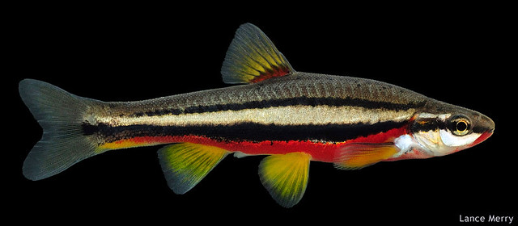
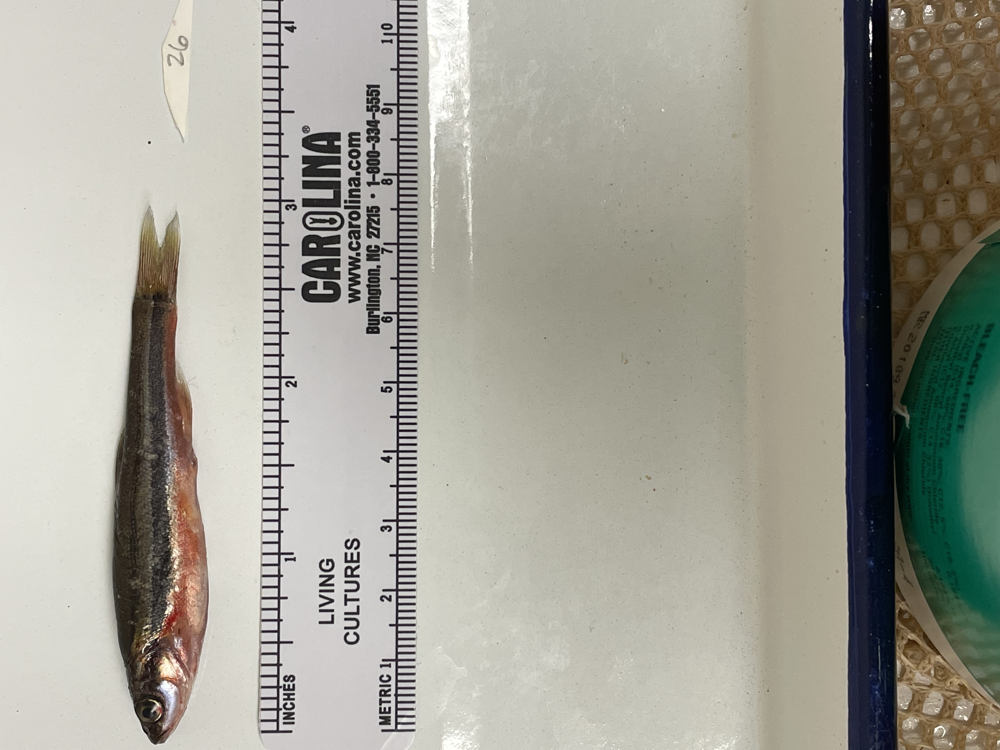
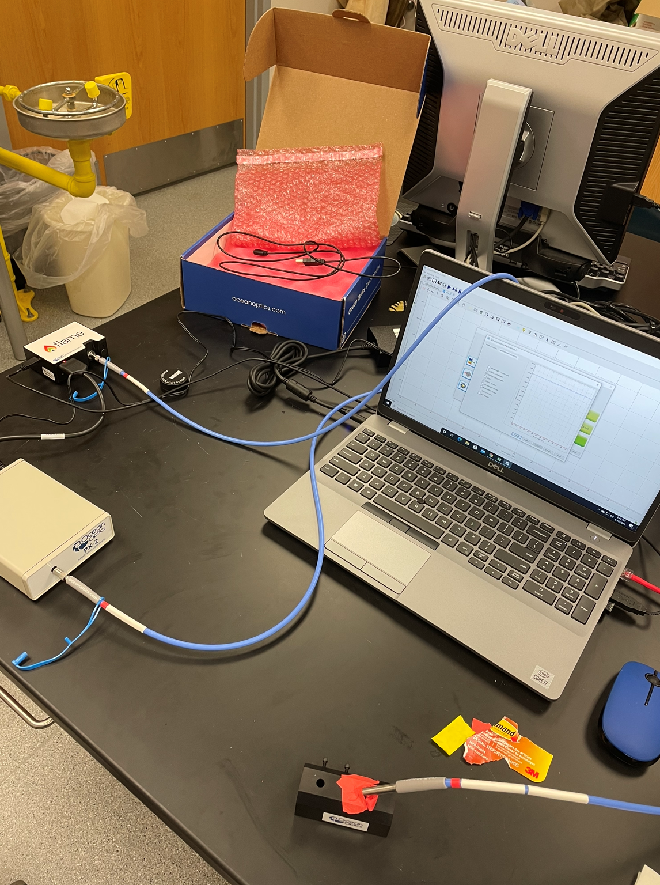

Graduate Research
Is Red Coloration in Chrosomus erythrogaster an Honest Signal?
Introduction
Color display in fishes can be influenced by social/reproductive interactions, predator/prey dynamics, and abiotic pressures in the environment. Red coloration, in particular, is seen in over 30% of North American minnows, most notably during the spawning season. Both male and female Southern Redbelly Dace (Chrosomus erythrogaster), a small minnow species in the family cyprinidae, display red and yellow breeding coloration. Carotenoids, responsible for this coloration, are fat-soluble naturally occurring pigments. These pigments are synthesized by organisms such as algae, plants, fungi, and bacteria, thus animals that possess carotenoids must obtain them through diet. Fish can incorporate carotenoids into their gonads and other internal organs, nerve tissue, fat, and the integumentary system which is the location of vibrant red, orange, and yellow displays. Chromatophores, the cells that house these pigments, control the visual display of available pigments. In this study we will investigate red/yellow coloration in Chrosomus erythrogaster as an indicator of overall individual health (i.e., is an honest signal) by comparing intensity and total coverage of carotenoid-based color expression, body condition, reproductive status, and environmental stressors. The experimental hypothesis is red/yellow coloration in Chrosomus erythrogaster acts as an honest signal of overall health of individuals.
Methods
Chrosomus erythrogaster were collected from wild populations in the Cumberland River watershed via seine net hauls and transported in a Styrofoam cooler to APSU. Within 1-2 hours, fish were euthanized with MS222 to relax the chromatophores to allow for optimal expression of red and yellow coloration. Three focal points along the red band on the belly and one focal point on the yellow portion of the dorsal fin were measured for hue, saturation, chroma, whiteness, tint using an Ocean Optics Flame Spectrophotometer. Each individual was measured on the left side of the body at all four points for consistency. To prevent distortions caused by reflectance from water, fish were blot using a lint-free wipe before measurement. Following color measurements, a photograph was taken from the left side of each fish in order to calculate the total body area to red coloration area using ImageJ analysis software. Individuals were then assessed for any external parasites (trematodes) and damage (i.e. lesions, abnormal growths), and categorized as low, medium, or high. Fish were then placed in labeled jars of formalin fixative for 5-7 days for use in subsequent body condition factor and Gonadosomatic Index (GSI) measurements. After the fixation period, fish were removed from the formalin and rinsed 3-5 times in tap water to remove formalin. Each specimen was then assessed for body condition: weight, subtracted by gut content, divided by standard length. Removal of gut content will reduce the confounding factor of recent feeding. We will then remove the gonads (testes or ovaries) to identify the sex and calculate the gonadosomatic index (GSI), which is a measure of gonad weight to body weight. Viscera were replaced into the body cavity, and specimens held until the completion of the study. A subset will be archived in the David Snyder Vertebrate Museum.
Analysis
Response variables of body condition factor, GSI, and external damage (parasites and lesions) in relation to the explanatory variables of color (hue, saturation, brightness, and coloration area) will be used in analysis. The continuous response and explanatory variables will be analyzed using general linear models with a multivariate analysis of variance (MANOVA) for multiple response variables. Multiple analyses of covariance (ANCOVAs) will be used to test for the presence of sexual dimorphism by determining if color and sex covary. Analyses will be performed using R studio.